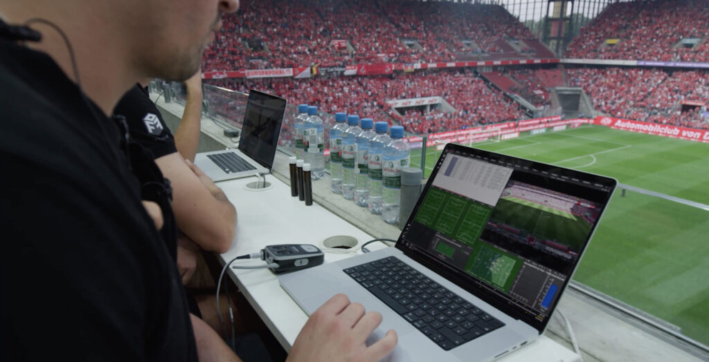

Áreas de cobertura
- Análisis táctico post-partido
- Cobertura del mercado de fichajes
- Entrevistas exclusivas a protagonistas
- Estadísticas avanzadas con herramientas digitales

Elaboración de contenido sobre las series A y B del Torneo Intermedio, incluyendo los partidos de cada fecha y los equipos participantes.
Cobertura de la Copa Sudamericana 2026 con resultados, clasificados, próximos partidos y cruces de las diferentes fases.
Cada proyecto comienza con la búsqueda y revisión de información. Luego, los datos se organizan y se presentan de una manera clara, atractiva y fácil de comprender.
